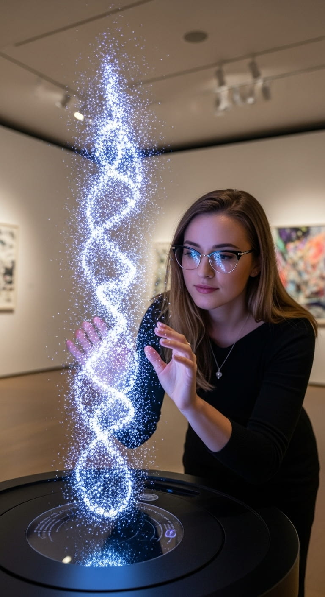

Hidden Narratives: Semantic Coherence as Digital Art through AI and Color
Abstract
This paper introduces a novel approach to visual art that embeds linguistic narratives within 3D digital sculptures through color encoding. We propose a methodology for mapping a lexicon of words to a perceptually uniform color space using associations derived from large language models, allowing artists to create visually compelling three-dimensional works that simultaneously encode hidden narratives. The encoded narratives remain imperceptible to casual observation but can be computationally extracted and reconstructed. Our framework integrates linguistic theory, color science, and natural language processing to establish a bidirectional relationship between language and visual expression in three-dimensional space. Central to our research is a hypothesis that semantically coherent narratives naturally produce more aesthetically pleasing visual patterns than semantically void text, suggesting an intrinsic connection between linguistic meaning and visual harmony. We detail the complete methodology—from lexicon development and LLM-based color mapping to the encoding and decoding processes—and discuss theoretical and practical validation approaches. This work contributes to emerging fields of computational art and interactive aesthetics, offering new paradigms for audience engagement and artistic expression in 3D digital environments while potentially revealing fundamental cognitive connections between linguistic coherence and visual aesthetics.
1. Introduction
Visual art has historically communicated meaning through symbolism, composition, and aesthetic elements. However, traditional approaches typically rely on implicit cultural references or metaphorical relationships rather than explicit encoding of linguistic content. This paper presents a systematic framework for embedding complete narratives within 3D digital sculptures through a precise color-encoding system that maintains visual coherence and aesthetic integrity.
The proposed methodology operates within two distinct but interconnected domains:
- The narrative domain: A semantically rich story created with artistic intent, using a curated vocabulary.
- The visual domain: An aesthetically autonomous 3D digital sculpture that simultaneously functions as a sophisticated encoding medium.
This duality creates a multilayered artistic experience that invites both immediate aesthetic appreciation and deeper intellectual engagement through computational decoding. The approach builds upon theoretical foundations in semiotics, color theory, and computational linguistics while introducing novel techniques for narrative encoding and extraction in three-dimensional space.
Our specific contributions include:
- A systematic methodology for mapping linguistic elements to colors using large language models that capture widespread cultural and linguistic associations.
- Techniques for embedding narratives within aesthetically cohesive 3D digital sculptures while preserving visual harmony.
- Methods for computationally extracting and reconstructing narratives from 3D visual data.
- A framework for validating encoding accuracy, narrative coherence, and aesthetic quality.
- A hypothesis that semantically coherent narratives naturally produce more aesthetically pleasing visual patterns than meaningless text, potentially revealing fundamental connections between linguistic meaning and visual perception.
- Implications for interactive art experiences and audience engagement in 3D digital environments.
This hypothesis—that coherent meaning in language corresponds to visual harmony when encoded through color—forms a central focus of our research. If supported, it would suggest that the relationship between linguistic and visual processing is more deeply intertwined than previously understood, with significant implications for cognitive science, information visualization, and artistic practice.
This work addresses a fundamental question at the intersection of visual art, linguistics, and cognitive science: Can linguistic meaning be systematically encoded in visual form while preserving both semantic integrity and aesthetic value? Our approach offers a technical solution to this question while opening new possibilities for artistic expression and audience engagement.
The following sections position our approach within existing literature, detail the methodology, describe validation approaches, discuss applications and implications, address limitations, and outline directions for future research in the realm of 3D digital sculpture. This paper presents a novel framework and research proposal, inviting further exploration and empirical validation.
Universe 00110000
2. Literature Review and Theoretical Framework
2.1 Visual Coding Systems and Steganography
Our approach builds upon and extends existing work in steganography—the practice of concealing information within other non-secret data or a physical object. Traditional steganography focuses primarily on hiding binary data within digital media, with information security as the primary goal (Cox et al., 2008). Fridrich et al. (2001) established methods for embedding data in digital images using least significant bit (LSB) manipulation, while Cox et al. (1997) explored imperceptible watermarking techniques for securing multimedia content.
Unlike traditional steganography, which prioritizes information hiding over aesthetic considerations, our system emphasizes the dual goals of semantic encoding and aesthetic expression in three-dimensional space. The most closely related work is "literary steganography" (Bennett, 2004), which hides messages within text through techniques like acrostics or linguistic ciphers. Our contribution inverts this relationship by encoding text within 3D visual media while maintaining aesthetic integrity and introducing a spatial dimension not present in previous approaches.
Recent work by Lindner et al. (2013) explored automatic creation of color palettes from words, demonstrating connections between linguistic content and color selection. However, their approach focused on palette generation rather than bidirectional encoding and decoding of complete narratives. Our system extends this concept to three-dimensional space and complete linguistic structures with a focus on both technical fidelity and aesthetic coherence.
2.2 Color Theory and Perceptual Spaces
The perceptual uniformity of color spaces is essential for our encoding system. The CIE L*a*b* color space (Lab) was designed to approximate human vision, with the L* component representing lightness and a* and b* representing color dimensions (Fairchild, 2013). Unlike RGB or CMYK spaces, the Euclidean distance ΔE*ab between colors in Lab space corresponds more closely to perceived visual differences, making it ideal for our encoding system where discriminability between mapped words is crucial. However, while Lab is more perceptually uniform than RGB or CMYK, it is not perfect—especially in saturated regions—so refined metrics like CIE94 or CIEDE2000 are sometimes used for greater accuracy.
Building on this foundation, our work considers not just individual color assignments but the global aesthetic harmony of color combinations in three-dimensional arrangements. This draws from color harmony theories (Itten, 1970; Albers, 1963) that examine how colors interact visually when placed in proximity. Our approach aims to extend these principles by leveraging AI to discover and map culturally embedded color-word associations, aiming to encode semantic relationships within aesthetically pleasing compositions.
Mojsilović (2005) developed a computational model for color naming, demonstrating how perceived colors can be systematically translated into linguistic descriptions. This research into computationally mapping color values to specific linguistic terms provides foundational support for our system, particularly for the decoding phase where colors within the sculpture must be reliably identified and translated back to their associated words from the lexicon. It underscores the feasibility of establishing systematic, computationally manageable associations between color and language.
2.3 Computational Linguistics and Narrative Reconstruction
Natural language processing (NLP) techniques for text reconstruction have advanced significantly with the emergence of large language models. Previous work in sentence unscrambling (Barzilay & Elhadad, 2002) and text restoration (Devlin et al., 2019) provides foundational methodologies for reconstructing disrupted text. However, these approaches typically assume some preserved structure or context, while our scrambled narratives require more sophisticated reconstruction methods.
Recent transformer-based language models (Brown et al., 2020) demonstrate remarkable capabilities in understanding contextual relationships and generating coherent text. Our decoding methodology leverages these capabilities for narrative reconstruction from 3D spatial arrangements, extending previous approaches by addressing the specific challenges of reconstructing narratives from unordered word sets.
2.4 Synesthesia and Cross-Modal Perception
Synesthesia—a neurological phenomenon where stimulation in one sensory pathway leads to automatic experiences in another—provides an important theoretical foundation for our work. Research on grapheme-color synesthesia, where letters or words trigger specific color perceptions, has demonstrated consistency in associations both within individuals over time and across synesthetes (Simner et al., 2005).
Ramachandran and Hubbard (2001) proposed that synesthesia might reveal inherent structural similarities between different sensory domains. Our color mapping system draws inspiration from this concept, aiming to capture semantic relationships through a color space that reflects underlying linguistic structures.
Of particular relevance is the finding that synesthetic associations often follow semantic patterns rather than purely superficial features (Dixon et al., 2006). Words with similar meanings tend to evoke similar colors for synesthetes, suggesting an underlying connection between semantic content and visual perception that we seek to formalize in our encoding system.
2.5 Cognitive Foundations of the Semantic-Visual Harmony Hypothesis
Our central hypothesis—that semantically coherent narratives naturally produce more visually harmonious color patterns than semantically void text—draws support from several cognitive and perceptual theories. This aligns with frameworks such as the Principle of Narrative Realization, which posits that coherent narratives represent exceptionally rare and structured configurations within their potential combinatorial space. This challenge of identifying meaningful arrangements from a vast set of possibilities echoes early explorations into combinatorial systems, such as Ramon Llull's Ars Magna in the 13th century, which sought to generate complex truths from a finite set of basic principles. Such inherent structure, when mapped to color in our system, might underpin the observed visual harmony. These broader theories supporting our hypothesis include:
2.5.1 Semantic Network Theory
Semantic network models of cognition (Collins & Loftus, 1975) suggest that concepts are organized in interconnected networks where semantically related concepts are more closely linked. Coherent narratives activate densely connected, consistent patterns within these networks. When words within coherent semantic networks are mapped to colors, the resulting visual patterns may inherit the structural coherence of the underlying semantic relationships. In contrast, incoherent text forms sparse or contradictory semantic networks that, when visualized, may produce disjointed or discordant color arrangements.
2.5.2 Embodied Cognition
Theories of embodied cognition (Lakoff & Johnson, 1999; Barsalou, 2008) propose that conceptual understanding is grounded in sensorimotor experience. Colors are not merely visual phenomena but carry emotional and experiential associations (e.g., "red" with warmth/passion, "blue" with calmness/depth). Coherent narratives activate consistent emotional and experiential patterns that may align with established color harmony principles. This alignment could explain why semantically coherent text, when mapped to colors, might produce more harmonious visual compositions than random or incoherent text.
2.5.3 Processing Fluency and Aesthetic Appreciation
Processing fluency theory (Reber et al., 2004) suggests that stimuli processed more easily are judged more aesthetically pleasing. Semantically coherent text is processed more efficiently by the brain due to its predictable patterns and meaningful relationships. This processing advantage may extend to its visual representation, making color patterns derived from coherent text more pleasing to viewers compared to patterns derived from incoherent text that lacks these predictable structures.
2.5.4 Cross-Modal Correspondence
Research on cross-modal correspondence (Spence, 2011) has identified systematic relationships between sensory experiences across different modalities. These correspondences suggest that structural patterns in one sensory domain (e.g., linguistic meaning) may naturally map to similar patterns in another domain (e.g., visual harmony). Our hypothesis proposes that the organizational principles that make text coherent may share fundamental similarities with those that make visual compositions harmonious.
These theoretical foundations provide a cognitive basis for exploring the relationship between semantic coherence and visual harmony, positioning our hypothesis within established frameworks of human perception and cognition.
Universe 00110000
3. Proposed Methodology
3.1 Lexicon Development
3.1.1 Vocabulary Selection
We propose to develop a comprehensive lexicon of 50,000 words selected based on three criteria:
- Frequency: Words are drawn from standard English frequency lists to ensure comprehensibility and utility in narrative construction.
- Expressiveness: The vocabulary includes diverse word classes (nouns, verbs, adjectives, etc.) to support rich narrative construction.
- Semantic coverage: Words are selected to span diverse semantic domains, ensuring breadth of expressive capability.
This curated vocabulary serves as the foundation for narrative creation and subsequent encoding. The size of 50,000 words provides sufficient expressivity while remaining manageable for color mapping and discrimination.
3.1.2 Word-Color Association through Large Language Models
Our approach leverages the implicit knowledge embedded within large language models (LLMs) to establish word-color associations, a concept akin to developing a computationally derived synesthetic map between language and color. Rather than developing complex mathematical models, we harness the cultural, linguistic, and psychological patterns that LLMs have learned from vast text corpora. This approach is based on the observation that LLMs have internalized widespread associations between words and colors through their training on diverse texts that describe these relationships.
The process works as follows:
- Multi-model querying: We query multiple state-of-the-art LLMs (e.g., GPT-4, Claude, PaLM) with structured prompts such as "What color would you most strongly associate with the word '[target word]'?"
- Consensus building: For each word in our lexicon, we collect responses from multiple independent LLMs to identify consistent color associations.
- Pattern identification: Words that receive highly consistent color associations across different models are considered to have strong, culturally embedded color relationships.
- Ambiguity resolution: For words with divergent color associations, we either:
- Select the most common response
- Choose the association with the highest confidence scores
- Create a weighted blend of the suggested colors
- Color specification: Convert text-based color descriptions to precise coordinates in the CIE L*a*b* color space for consistent rendering.
This approach offers several advantages over traditional mathematical mapping techniques:
- It captures culturally grounded associations that reflect human intuition about color-word relationships.
- It leverages the collective knowledge embedded in multiple LLMs trained on vast corpora.
- It naturally handles nuanced emotional and cultural dimensions of word-color associations.
- It scales efficiently to large lexicons without requiring complex optimization algorithms.
Furthermore, it is hypothesized that semantically related words (e.g., "ocean," "sea," "lake") will tend to receive similar color assignments from this LLM-querying process. Such natural semantic clustering in color space could enhance both decoding accuracy and the potential for visual coherence in the resulting artwork.
3.2 Encoding Process
3.2.1 Narrative Construction
The artist first creates a narrative using words from the lexicon. This narrative serves as the semantic content to be encoded and can range from poetry to prose, maintaining artistic integrity and coherence. The narrative construction process is not constrained beyond vocabulary selection, allowing full creative freedom in terms of structure, style, and content.
3.2.2 Color Translation
Each word in the narrative is translated to its corresponding color according to the LLM-derived color mapping. This creates a linear sequence of colors representing the narrative in its original order.
3.2.3 Compositional Sculpture Creation
The artist creates a 3D digital sculpture using discrete elements colored according to the translated narrative. Critically, the spatial arrangement of colored elements is determined by aesthetic considerations rather than narrative sequence. This process:
- Prioritizes visual harmony, balance, and artistic expression in three-dimensional space.
- Decouples the spatial arrangement from the narrative sequence.
- Creates an aesthetically cohesive sculpture that functions independently as a visual piece.
- Enables viewing from multiple angles, allowing dynamic engagement with the work.
The encoding is often implemented using distinct visual units, such as elements within particle systems, where each colored unit serves as a representation of a single word, thus a discrete unit of meaning. This design choice of using distinct elements facilitates the subsequent decoding process.
3.3 Decoding Process
3.3.1 Color Extraction and Word Identification
To uncover the hidden narrative, digital tools are used to scan the sculpture. This process involves several steps:
- Color sampling: The colors of the discrete elements within the 3D sculpture are identified. Depending on the complexity of the sculpture, this might involve sampling representative points on each element or segmenting the sculpture into its constituent colored parts.
- Color to word mapping: Each identified CIE L*a*b* color value is then mapped back to its corresponding word using the inverse of the LLM-derived word-color association table established during the encoding phase (Section 3.1.2).
- Word list generation: This results in an unordered set of words, as the spatial arrangement of colored elements prioritizes visual aesthetics over narrative sequence.
3.3.2 Narrative Reconstruction Using LLMs
For narrative reconstruction, we again leverage the power of large language models. Given an unordered set of words extracted from the sculpture, we prompt an LLM to reconstruct a coherent narrative that incorporates all the identified words. This approach takes advantage of the LLM's understanding of narrative structure, semantic relationships, and contextual coherence.
This LLM-based reconstruction approach offers several advantages over traditional algorithmic methods:
- It leverages sophisticated language understanding capabilities to generate naturally flowing text.
- It can handle ambiguities and creative language use more effectively.
- It produces human-readable narratives even from challenging word combinations.
- It can maintain stylistic elements like poetic structure or prose rhythm when appropriate.

Universe 00110000
3.4 Semantic-Visual Harmony Testing Methodology
A central aspect of our research involves testing the hypothesis that semantically coherent narratives naturally produce more aesthetically pleasing visual patterns than semantically void text. While aesthetic judgment is subjective, for the purposes of this study, we operationalize 'aesthetically pleasing' by quantifying a set of established principles from art theory and cognitive science. These include structural principles such as symmetry and balance; color-based principles such as the emergence of harmonious color clusters (e.g., analogous or complementary schemes); and cognitive principles such as high processing fluency and pattern recognizability. Our evaluation will therefore focus on measuring the degree to which these properties manifest in visual patterns derived from different text categories. This investigation into the properties of coherent narratives aligns with theoretical frameworks like the Principle of Narrative Realization, which suggests that such narratives are rare, highly structured entities. We have developed a comprehensive methodology to investigate this relationship between semantic coherence and visual harmony.
3.4.1 Multiple Text Categories
- Highly coherent narratives: Emotionally resonant, thematically unified texts such as poetry or evocative prose with clear narrative structure and consistent themes.
- Grammatically correct but semantically anomalous text: Sentences that follow grammatical rules but contain semantic oddities or contradictions (e.g., "Colorless green ideas sleep furiously").
- Completely random word lists: Unordered collections of words with no grammatical or semantic structure.
Each category contains multiple examples matched for length, word frequency, and part-of-speech distribution to control for confounding variables.
3.4.2 Controlled Visual Representations
For each text sample, we propose to generate multiple visual representations to isolate the effect of semantic coherence from spatial arrangement:
- 2D grid arrangements: Words mapped to colors and displayed in a regular grid pattern.
- 3D spherical arrangements: Colors arranged on the surface of a sphere with equal spacing.
- 3D random distributions: Colors positioned randomly in three-dimensional space.
- Linear sequences: Colors arranged in a simple line following the original text sequence.
These standardized arrangements help control for the confounding effects of spatial composition on aesthetic judgment, allowing us to isolate the influence of semantic coherence.
3.4.3 Mechanisms of Potential Correlation
We identify and analyze three potential mechanisms that might explain why semantic coherence could translate to visual harmony:
- Thematic color clustering: Coherent narratives typically develop around consistent themes, potentially creating color clusters that reflect semantic relationships. These clusters might naturally follow color harmony principles (analogous, complementary) without explicit design.
- Emotional congruence: Coherent narratives maintain consistent emotional trajectories, which may translate to emotionally congruent color progressions when mapped through our system. Incoherent text jumps between emotional states, potentially creating jarring color transitions.
- Structural resonance: The organizational principles that make text coherent may share fundamental similarities with those that make visual compositions harmonious, suggesting a deeper cognitive resonance between linguistic and visual processing.
By analyzing these mechanisms across our text categories, we can identify which factors most strongly influence the relationship between semantic coherence and visual harmony.
3.4.4 Theoretical Rationale: Aesthetic Harmony as Predictive Efficiency
The core hypothesis of this research—that semantic coherence translates into visual harmony—is grounded in a functional theory of aesthetics rooted in cognitive efficiency. We propose that patterns perceived as generally "aesthetically pleasing" are those that represent highly efficient strategies that tackle the Prediction Optimization Problem (POP). A harmonious or symmetric geometric shape follows a predictable "path of least resistance" for cognitive processing. This high processing fluency means the brain can model the pattern with minimal resource expenditure (low Signal Cost).
Furthermore, the regularity of such a pattern allows an observer to successfully anticipate its structure from limited information, yielding a significant improvement in their internal predictive model. Within the framework of Predictive Landscape Semantics, this predictive improvement is the very definition of meaning (ΔQ). Therefore, a harmonious visual pattern is one that offers high meaning for low cost. We hypothesize that the subjective feeling of aesthetic pleasure is the brain's evolved internal reward for identifying these predictively valuable, computationally efficient patterns. This testing methodology, therefore, seeks to find empirical evidence for this link: that the rare, highly structured patterns of coherent language (which are predictively useful linguistically) will manifest as visually harmonious forms (which are predictively useful perceptually).
Universe 00110000
4. Applications and Implications
4.1 Artistic Applications
The proposed methodology enables several novel artistic applications:
- Multilayered storytelling: Creating works that reveal different narratives depending on the mode of engagement (visual observation versus computational decoding) and viewing angle.
- Interactive exhibitions: Developing gallery experiences where visitors can manipulate 3D digital sculptures and decode hidden narratives through digital interfaces, creating dynamic engagement with the artwork.
These applications expand the expressive potential of visual art by creating multiple layers of meaning and engagement, encouraging audiences to interact with the work in both immediate sensory and deeper intellectual ways.
4.2 Technological Implications
This research contributes to several technological domains:
- Computational aesthetics: Advancing understanding of the relationship between three-dimensional visual harmony and information encoding, potentially revealing fundamental principles of aesthetic organization.
- Multimodal AI: Developing systems capable of bridging visual and linguistic modalities in 3D space, with potential applications in design, communication, and human-computer interaction.
- Semantic visualization: Creating new approaches for visualizing linguistic content beyond traditional text display, with applications in education, data visualization, and accessibility.
- Cross-modal translation: Establishing principles for translating between linguistic and visual domains while preserving both information content and aesthetic quality.
These technological implications extend beyond artistic applications to influence broader fields concerned with information representation and human perception.
4.3 Cognitive and Perceptual Implications
Our approach raises important questions about the nature of cross-modal perception and the relationship between language and visual experience:
- Synesthetic foundations: The work may provide insights into the cognitive mechanisms underlying synesthesia, potentially revealing whether such cross-modal associations have semantic foundations.
- Embodied cognition: The encoding system offers a testbed for theories of embodied cognition that posit intrinsic connections between semantic understanding and sensory experience.
- Aesthetic universals: By studying the relationship between semantic coherence and visual harmony, the work may help identify potential universal principles in aesthetic perception.
- Multimodal meaning: The research contributes to understanding how meaning is constructed across different perceptual modalities, with implications for theories of communication and cognition.
These implications connect the technical contribution to fundamental questions in cognitive science and philosophy of mind, suggesting broader intellectual significance beyond the immediate artistic application.
4.4 Implications of the Semantic-Visual Harmony Hypothesis
If supported, our central hypothesis has profound implications across multiple domains:
4.4.1 Cognitive Architecture
The correlation between semantic coherence and visual harmony would suggest fundamental connections between linguistic and visual processing systems in the brain. This finding would support theories that different cognitive domains share underlying organizational principles, as explored in frameworks like the Principle of Narrative Realization which posits deep structural commonalities in coherent information. It would also challenge modular views of cognition that treat language and visual processing as separate, encapsulated systems.
4.4.2 Information Visualization
The findings could transform how we visualize complex information by suggesting that semantically structured data might naturally produce more interpretable and aesthetically pleasing visualizations. This could lead to new approaches in data visualization that leverage semantic structure to enhance visual clarity and engagement.
4.4.3 Artificial Intelligence and Computational Creativity
These principles could inform more sophisticated AI systems that generate visually harmonious outputs based on semantic understanding rather than explicit design rules. By incorporating the relationship between meaning and form, computational creativity systems could produce more compelling and coherent multimodal artistic works.
5. Conclusion
This paper has presented a comprehensive framework for embedding linguistic narratives within 3D digital sculptures through an LLM-derived color-encoding system. By establishing a bidirectional relationship between language and visual expression in three-dimensional space, our approach creates multilayered artistic experiences that engage audiences on both aesthetic and intellectual levels.
The methodology integrates linguistic theory, large language models, color science, and computational techniques to enable the creation of visually compelling 3D digital sculptures that simultaneously function as sophisticated narrative ciphers. While technical and artistic challenges remain, the approach opens new avenues for artistic expression, audience engagement, and interdisciplinary research.
Central to our contribution is the novel hypothesis that semantically coherent narratives naturally produce more aesthetically pleasing visual patterns than semantically void text. This hypothesis suggests fundamental connections between linguistic meaning and visual harmony that may reflect deeper cognitive principles governing cross-modal perception.
Our work contributes to the emerging field of computational art by exploring how technological approaches can enhance rather than replace traditional artistic practices. The fusion of storytelling and aesthetics proposed here represents not just a technical innovation but a conceptual expansion of what art can be and how audiences can engage with it in three-dimensional digital environments.
Most significantly, this research suggests fundamental connections between semantic coherence and visual harmony, pointing toward deeper relationships between linguistic meaning and aesthetic perception that may have implications beyond art into cognitive science and cross-modal perception. By making these connections explicit and systematically explorable, we hope to stimulate further investigation into the nature of meaning across different perceptual modalities and the potentially universal cognitive principles that underlie both language and aesthetics.
References
Albers, J. (1963). Interaction of Color. Yale University Press.
Barsalou, L. W. (2008). Grounded cognition. Annual Review of Psychology, 59, 617-645.
Bennett, K. (2004). Linguistic steganography: Survey, analysis, and robustness concerns for hiding
information in text. CERIAS Technical Report 2004-13, Purdue University.
Brown, T. B., Mann, B., Ryder, N., Subbiah, M., Kaplan, J., Dhariwal, P., ... & Amodei, D. (2020). Language
models are few-shot learners. Advances in neural information processing systems, 33, 1877-1901.
Collins, A. M., & Loftus, E. F. (1975). A spreading-activation theory of semantic processing.
Psychological Review, 82(6), 407–428.
Cox, I. J., Kilian, J., Leighton, F. T., & Shamoon, T. (1997). Secure spread spectrum watermarking for
multimedia. IEEE Transactions on image processing, 6(12), 1673-1687.
Cox, I., Miller, M., Bloom, J., Fridrich, J., & Kalker, T. (2008). Digital watermarking and
steganography. Morgan Kaufmann.
Devlin, J., Chang, M. W., Lee, K., & Toutanova, K. (2019). BERT: Pre-training of Deep Bidirectional
Transformers for Language Understanding. In Proceedings of the 2019 Conference of the North American
Chapter of the Association for Computational Linguistics: Human Language Technologies, Volume 1 (Long
and Short Papers) (pp. 4171-4186). Association for Computational Linguistics.
Dixon, M. J., Smilek, D., Duffy, P. L., Zanna, M. P., & Merikle, P. M. (2006). The Role of Meaning in
Grapheme-Colour Synaesthesia. Cortex, 42(2), 243-252.
Fairchild, M. D. (2013). Color appearance models. John Wiley & Sons.
Fridrich, J., Goljan, M., & Du, R. (2001). Reliable detection of LSB steganography in color and grayscale
images. In Proceedings of the 2001 workshop on Multimedia and security (pp. 27-30). ACM.
Itten, J. (1970). The Elements of Color: A Treatise on the Color System of Johannes Itten Based on His
Book The Art of Color. Van Nostrand Reinhold.
Lakoff, G., & Johnson, M. (1999). Philosophy in the flesh: The embodied mind and its challenge to
western thought. Basic Books.
Lindner, P., Knaflic, C. N., & Süsstrunk, S. (2013). Automatic creation of color palettes from words. In
Color and Imaging Conference (Vol. 2013, No. 1, pp. 248-251). Society for Imaging Science and
Technology.
Mojsilovic, A. (2005). A computational model for color naming and describing color composition of images.
IEEE Transactions on Image Processing, 14(5), 690-699.
Ramachandran, V. S., & Hubbard, E. M.
(2001). Synaesthesia–a window into perception, thought and language.
Journal of consciousness studies, 8(12), 3-34.
Reber, R., Schwarz, N., & Winkielman, P. (2004). Processing fluency and aesthetic pleasure: Is beauty in the
perceiver's processing experience?. Personality and social psychology review, 8(4), 364-382.
Simner, J., Ward, J., Lanz, M., Jansari, A., Noonan, K., Glover, L., & Oakley, D. A. (2005). Non-random
associations of graphemes to colours in synaesthetic and non-synaesthetic populations. Cognitive
neuropsychology, 22(8), 1069-1085.
Spence, C. (2011). Crossmodal correspondences: A tutorial review. Attention, Perception, &
Psychophysics, 73(4), 971-995.